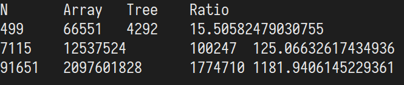
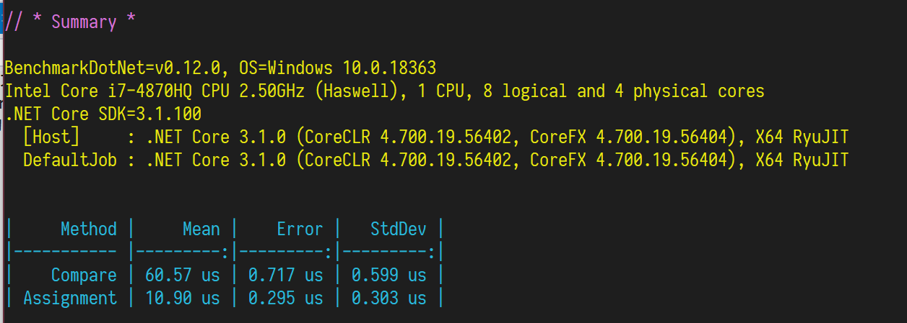

© 2020 《算法（第四版）》C# 题解 | Provided By 沈星繁
搜索解答
目前已完成到 3.1
3.2.46
上次更新：2020-01-14
发现了题解错误/代码缺陷/排版问题？请点这里：如何：提交反馈 。
解答
二叉搜索树一次查找平均需要 $1.39\lg N$ 次比较，二分查找则是 $N/2$，于是可以求得开销：
二叉查找树：$1.39 \sum_{i=1}^{N-1} \lg i=1.39 \lg (N-1)!=1.39(N-1)\lg(N-1)$。
二分查找实现的符号表：$1/2+2/2+ \cdots+(N-1)/2=N(N-1)/4$ 。
令两式相等，可以求得快 10 倍，100 倍，1000 倍的 $N$ 值。
例如快 10 倍的方程：
$$
13.9(N-1)\lg(N-1)=N(N-1)/4 \\
13.9\lg (N-1)=N/4
$$
这是一个超越方程，可以简单用程序穷举出一个数值解。
for (var i = 0d; i < int.MaxValue; i++)
{
if (13.9 * Math.Log2(i - 1) < i / 4)
{
Console.WriteLine(i);
return;
}
}
解得的三个 N 值分别为 499，7115，91651。
除了基本的新元素赋值外，二叉树在插入时只需要进行比较即可。
但二分查找实现的符号表还需要维持数组有序，需要额外的赋值操作。
因此二分查找实现的符号表和二叉搜索树的开销如下：

其中 Array 包含了比较和额外的赋值次数，Tree 只有比较次数。
一般我们认为比较（Compare）和赋值（=）开销是一样的，但实际上比较会慢 6 倍左右（.net core 3.1），因此如果直接进行计时测试，可能得不出快 10 倍/100 倍/1000 倍的结果。
